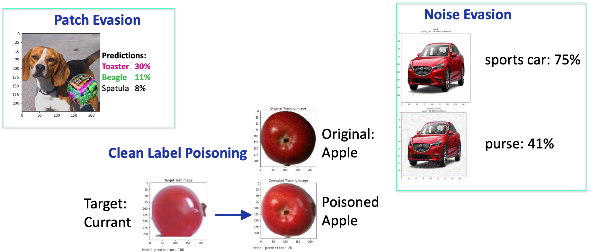
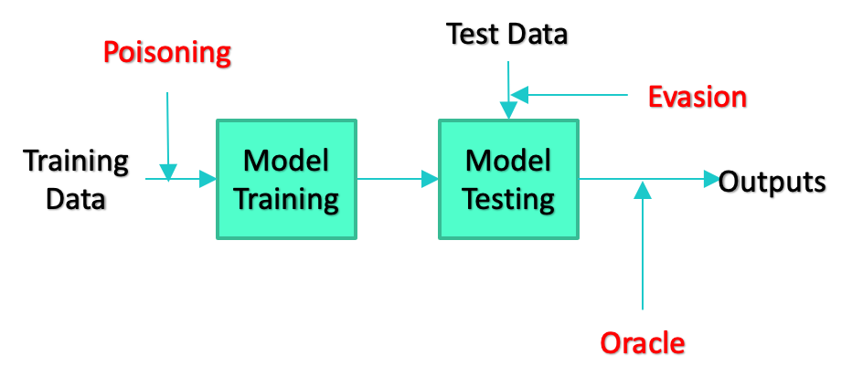
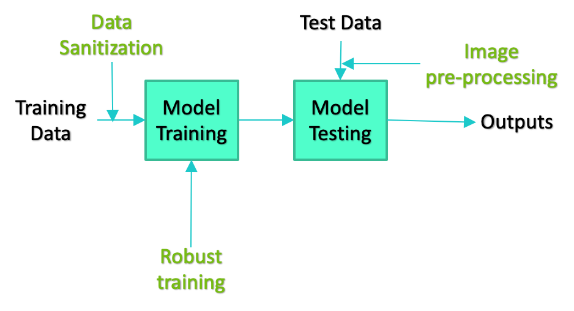

Motivation#
Our systems increasingly rely on Artificial Intelligence (AI) and Machine Learning (ML) algorithms and models to perform essential functions. As users of these systems, we must implicitly trust that the models are working as designed. Establishing the trustworthiness of an AI/ML model is especially hard, because the inner workings are essentially opaque to an outside observer. Ideally the models we rely on would be transparent, free from statistical bias, explainable, and secure.
In order to understand the tradespace between performance and the trustworthy characteristics of AI, we need a software test platform suited to creating reproducible, trackable, and reusable experiments. The National Institute of Standards and Technology (NIST) National Cybersecurity Center of Excellence (NCCoE) has built the Dioptra experimentation test platform to begin to address the broader challenge of evaluation for the trustworthy characteristics of AI. The test platform aims to facilitate evaluations of AI/ML algorithms under a diverse set of conditions. To that end, the test platform has a modular design enabling researchers to easily swap in alternative datasets, models, and evaluations. The result is the ability to advance the metrology needed to ultimately help assure AI/ML-enabled systems.
Motivating Example: Adversarial Attacks on Predictive AI#
Research has shown that AI/ML models are vulnerable to a variety of adversarial attacks that cause them to misbehave in ways that provide benefit to the adversary. This has sparked a competition between defenses attempting to mitigate attacks and ever novel attacks that defeat the defenses, and this competition poses a growing challenge for securing AI/ML systems.
In this changing landscape it is extremely difficult to develop a principled approach to evaluating the strengths and weaknesses of defenses. While much work has been done to evaluate techniques within a narrow range of conditions, there is a challenge in developing more robust metrics that account for the diversity of attacks that might be mounted against it. Questions about the generalizability of an algorithm across a range of attacks or the transferability of a technique across models or datasets must naturally consider the full range of possible conditions.
While there are a large variety of types of attacks against Predictive AI algorithms, NIST AI 100-2 E2025 identifies three broad categories:
Evasion attacks manipulate the input data (sometimes by altering the physical environment) in order to cause the ML model to misbehave.
Poisoning attacks alter the training data used to create or maintain a model with the intention of causing it to learn incorrect associations.
Privacy or Oracle attacks attempt to “reverse engineer” a model to learn about details of the training set used to create it, or specific model parameters to replicate the model.

In the case of image classification, attacks can manifest in many different ways ranging from the addition of adversarial noise which is difficult for humans to detect in the training or testing images, to the inclusion of colorful “patches,” which are noticeable by a human observer and can be printed and placed in the physical environment to alter the images entering the classifier.
There are an equal variety in the types of defenses researchers have developed to mitigate the effectiveness of attacks. These types range from altering the training paradigm for generating models to techniques that pre-process test data in an attempt to eliminate any carefully crafted alterations added by an adversary. Just as with attacks, defenses can be deployed at any stage of the ML development pipeline. The simplified diagrams of the development pipeline below depict some examples.


The sheer variety of attacks and defenses results in a combinatorial explosion of possible combinations of attacks, defenses, model architectures, and datasets, which creates a challenge for evaluating the effectiveness of defenses against the full array of attacks it may face. Dioptra, the NCCoE’s machine learning test platform, addresses this challenge by making it easier for researchers to explore the set of possible combinations in a reproducable and trackable way.